Send Weekly Client Reports from Google Sheets with Make.com
Every Monday morning, someone on your team opens a spreadsheet, copies this week's numbers into an email, formats it to look halfway decent, and hits send. Multiply that by five or ten clients, and you've lost an hour before the week even starts. This weekly report automation eliminates the ritual entirely. Make.com pulls each active client's metrics from a Google Sheets tracker, formats a clean HTML email with leads, meetings, and revenue, and sends personalized reports to every client — automatically, every Monday at 8 AM. Four modules, 25 minutes to build, and your team never copy-pastes a weekly update again.
Why Manual Weekly Reports Cost More Than You Think
The weekly report itself takes 5-10 minutes per client. That sounds manageable until you factor in the hidden costs: the Monday when someone is sick and reports go out on Wednesday, the week someone copies last week's numbers by accident, the client who gets another client's data because of a copy-paste error. Manual reporting doesn't fail dramatically — it fails quietly. A missed report doesn't trigger an alarm. A wrong number doesn't throw an error. The client just notices that your agency seems a little less on top of things than last month. Automating this process isn't about saving 30 minutes. It's about guaranteeing that every client gets accurate, on-time data without a single person needing to remember it's Monday.
How the Google Sheets Weekly Report Automation Works
The scenario runs on a schedule — every Monday at 8:00 AM. Make.com reads your Client List spreadsheet, filters for active clients, pulls each client's weekly metrics from a second sheet, and sends a formatted HTML email with leads, meetings booked, revenue, and notes. Clients who are paused or inactive are automatically skipped. This client reporting automation is ideal for agencies, consultants, and service businesses that manage multiple accounts.
Automation Flow — Step by Step
| Step | What Happens | Tool |
|---|---|---|
| 1 | Monday 8 AM — schedule trigger fires | Make.com Scheduler |
| 2 | Search for all clients with Status = Active | Google Sheets |
| 3 | Iterator splits results into individual clients | Make.com Flow Control |
| 4 | For each client, pull this week's metrics | Google Sheets |
| 5 | Send formatted HTML report email | Gmail |
The whole scenario uses 1 + 3N credits per run, where N is the number of active clients. The fixed cost is 1 credit for the client list search, plus 3 credits per client (iterator + metrics search + email). The schedule trigger itself doesn't consume a credit — it's a timer that starts the scenario, not a processing module. For 5 active clients, that's 16 credits per week — about 64 per month. Make.com's free plan includes 1,000 credits per month, so this automation uses about 6% of your free allowance, leaving plenty of room for other automations.
Scheduled Triggers vs Webhooks — What's Different Here
Every automation in this tutorial series so far has used instant (webhook) triggers: Stripe fires an event, Facebook sends a lead, Typeform submits a response — and Make.com reacts immediately. This scenario is different. There's no external event to react to. You want a report sent every Monday, regardless of whether anything happened. That's what scheduled triggers are for.
A scheduled trigger fires at a time you define — a specific day and hour — and runs the scenario once. Unlike polling triggers (which check for new data at intervals and consume a credit every time they check, even when there's nothing new), scheduled triggers only fire when they're supposed to. For a weekly report, that means zero wasted credits on empty checks. The trade-off is that scheduled triggers don't respond to real-time events. If a client's data changes at 3 PM on Monday, the email has already gone out with the 8 AM snapshot. For weekly reporting, that's perfectly fine — the report is a periodic summary, not a live dashboard.
Build this on Make.com's free plan — no credit card required. Start free on Make.com →
What You Need Before Starting
You need two Google Sheets and a connected Gmail account. This setup is ideal for agencies managing multiple client accounts, consultants sending regular progress updates, and any service business that reports metrics to clients on a recurring basis.
The first sheet is a Client List with three columns — Client Name, Contact Email, and Status. The second sheet holds Weekly Metrics — one row per client per week, with columns for Client Name, Week (as a date), Leads Generated, Meetings Booked, Revenue, and Notes. Both can live in the same Google Sheets document as separate tabs, or as separate spreadsheets — this guide uses separate spreadsheets for clarity.
Populate the Client List with at least two active clients and one paused client (for testing the filter). Add metrics data for the current week so the scenario has something to pull.
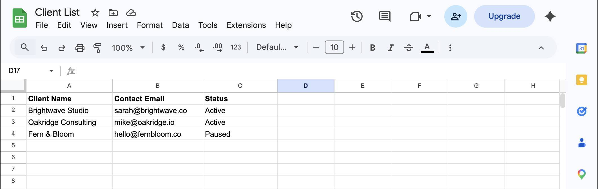
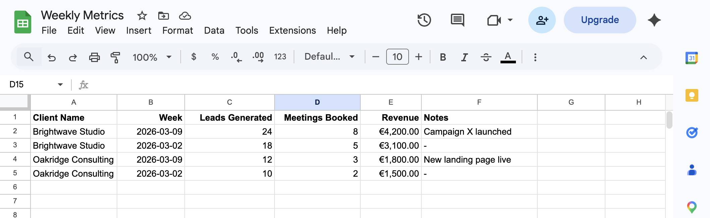
How to Build the Weekly Client Report Automation
- Log in to Make.com and create a new scenario. Name it "Weekly Client Reporting." Click the scheduling icon at the bottom of the canvas (the clock symbol next to "Custom schedule") to open Schedule settings. Set Run scenario to "Days of the week," Days to "Monday," and Time to "08:00." The timezone shown should match your account settings — this is the time the scenario will fire every week.
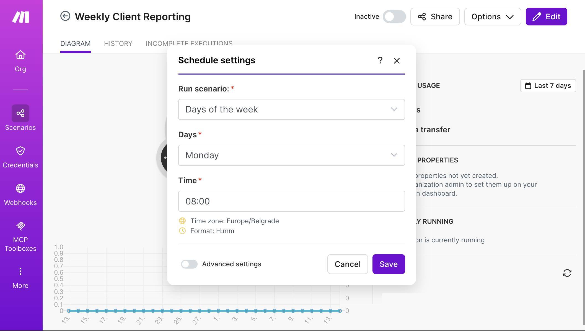
Make.com Schedule settings — run every Monday at 08:00, Europe/Belgrade timezone - Add the first Google Sheets module. Click the + button on the canvas and search for "Google Sheets." Select the Search Rows action. Connect your Google account if this is your first time. Set Spreadsheet Name to your Client List file and Sheet Name to the tab containing your client data. Set "Table contains headers" to Yes — this lets Make.com reference columns by their header names instead of letter codes.
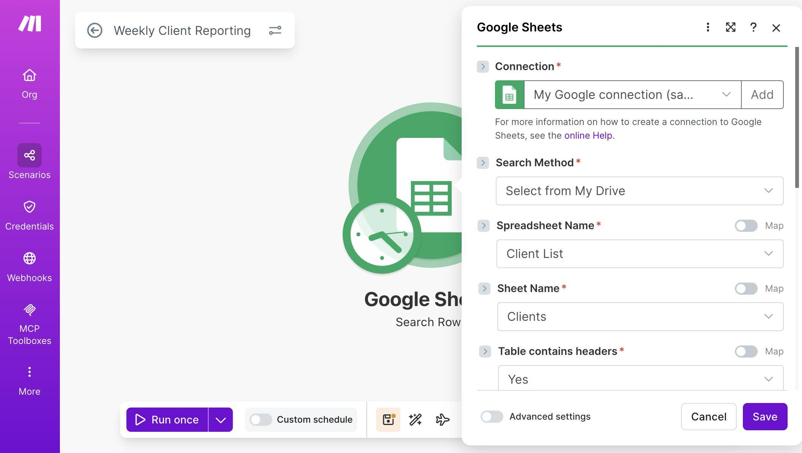
Google Sheets Search Rows — Client List spreadsheet and Clients sheet selected - Add a filter to return only active clients. Scroll down to the Filter section. Set the column to Status (C), the operator to "Text operators: Equal to," and the value to "Active." This ensures only clients with an Active status are returned — paused or inactive clients are skipped entirely.
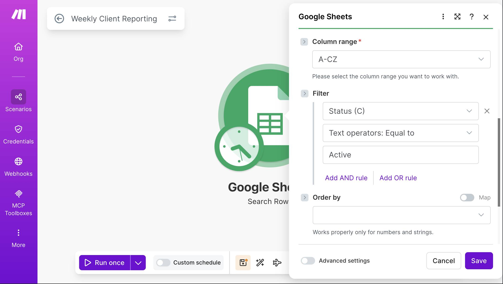
Google Sheets filter — Status column equals Active - Add an Iterator module to process clients individually. Click + and search for "Flow Control," then select "Iterator." In the Array field, map the bundle output from the previous Google Sheets module — click the field, then select "2. Google Sheets — Search Rows [bundle]" from the mapping panel. The Iterator takes the array of matching rows and splits them into individual bundles, so each client flows through the rest of the scenario one at a time.
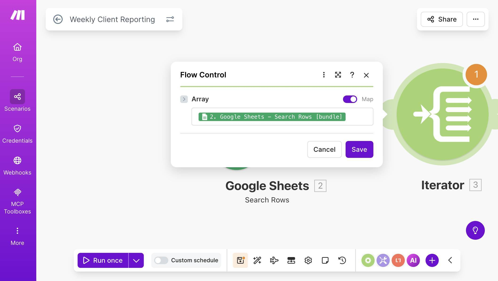
Iterator module — Array mapped to Google Sheets Search Rows bundle output - Add a second Google Sheets Search Rows module to pull weekly metrics. Click + and add another Google Sheets Search Rows. Set Spreadsheet Name to your Weekly Metrics file and Sheet Name to the Metrics tab. This module needs two filters working together with an AND condition.
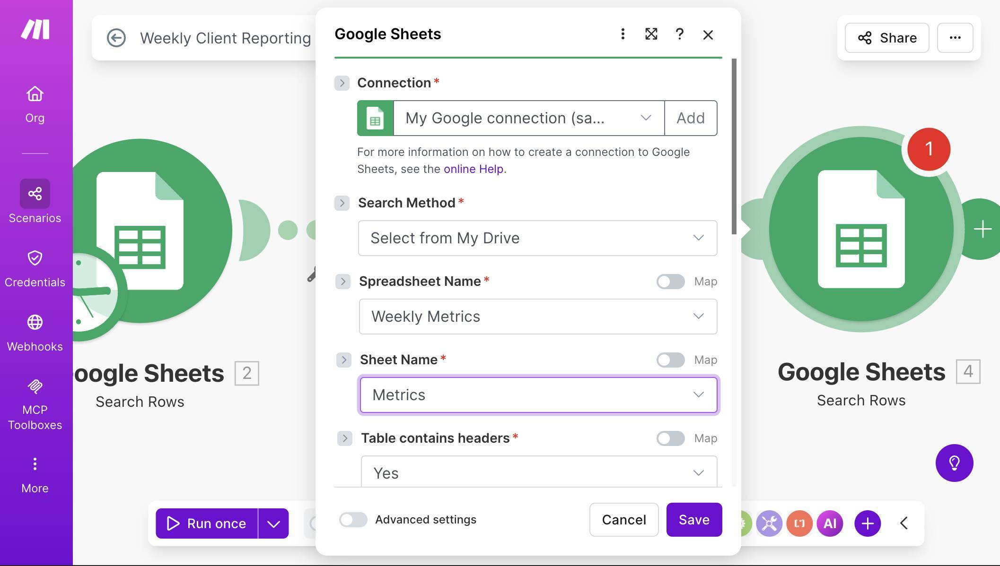
Second Google Sheets module — Weekly Metrics spreadsheet and Metrics sheet selected - Configure the metrics filters. The first filter matches the client: set column to Client Name (A), operator to "Text operators: Equal to," and map the value to "2. Client Name (A)" from the first Google Sheets module — this is the client name flowing through the Iterator. The second filter matches the week: set column to Week (B), operator to "Text operators: Equal to," and enter the formula formatDate(addDays(now; -7); "YYYY-MM-DD") using the formula editor (click the field and use the function icon). This formula calculates last Monday's date, matching the week column in your metrics sheet.
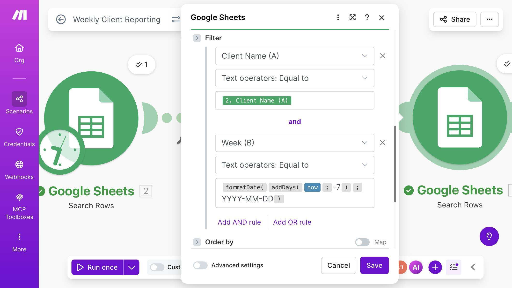
Metrics filter — Client Name mapped from first module AND Week matched with formatDate formula - 💡 Pro Tip: The date formula formatDate(addDays(now; -7); "YYYY-MM-DD") works correctly when the scenario runs on Monday — it subtracts 7 days to get the previous Monday's date. If the scenario runs on a different day (say, you trigger it manually on Tuesday), the formula returns the wrong date and no metrics are found. For production use, this is fine since the schedule guarantees Monday execution. But during testing, you may need to temporarily hardcode the date value (e.g., "2026-03-09") in the filter to match your test data. Replace it with the formula once testing is complete.
- Add a Gmail module to send the report. Click + and search for "Gmail." Select "Send an Email." Connect your Gmail account when prompted. In the To field, map "2. Contact Email (B)" from the first Google Sheets module — this is the client's email address, flowing through the Iterator so each client gets their own email.
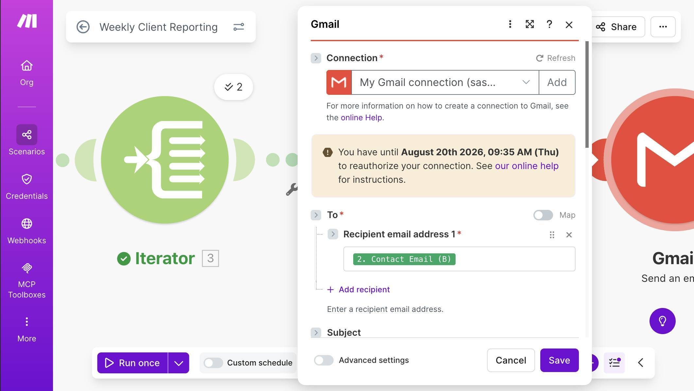
Gmail module — To field mapped to Contact Email from Client List - Configure the email subject, body type, and HTML content. For the Subject, type "Weekly Report — " then map "2. Client Name (A)" from the first module, then " — Week of " followed by the formula formatDate(addDays(now; -7); "MMM D, YYYY") to display the week in a readable format like "Mar 9, 2026." Set Body type to "Raw HTML" — this tells Gmail to render the email content as formatted HTML instead of plain text.
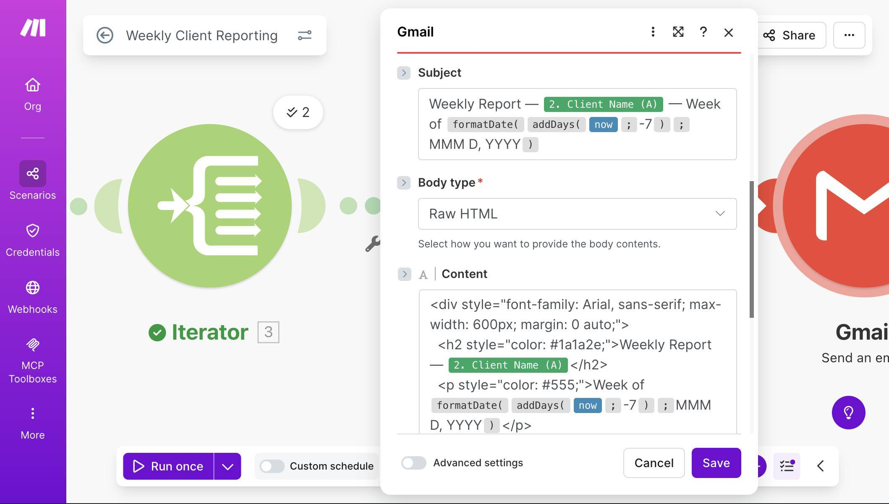
Gmail module — Subject with client name and date formula, Body type set to Raw HTML, and HTML content in the Content field - Paste the HTML email template into the Content field. In the Content field, you'll combine regular HTML markup with Make.com mapping tokens to create a formatted report. The template below creates a clean table with the client's metrics. You don't need to know HTML — copy the template from the section below ("The HTML Email Template"), paste it into the Content field, and then replace the placeholder names with the correct Make.com mapping tokens by clicking each placeholder and selecting the corresponding field from the mapping panel.
Build scheduled automations on Make.com — free plan, 1,000 credits/month. Start free on Make.com →
- Test the full scenario. Save the scenario and click "Run once." Since the schedule trigger passes control immediately during manual runs, the scenario will execute the full chain: search for active clients, iterate through each one, pull their metrics, and send the emails. Check your inbox (or the client test email) for the formatted report.
- 💡 Pro Tip: During testing, set the To field temporarily to your own email address instead of the mapped client email. This way you receive all test emails without accidentally sending incomplete reports to real clients. Once everything looks correct, switch the mapping back to Contact Email (B).
- Verify the results. You should receive one email per active client — two in our test setup (Brightwave Studio and Oakridge Consulting). The paused client (Fern & Bloom) should not receive anything. Each email should show the correct client name in the subject line and body, the right metrics from the Weekly Metrics sheet, and the Notes field only when it contains actual content.
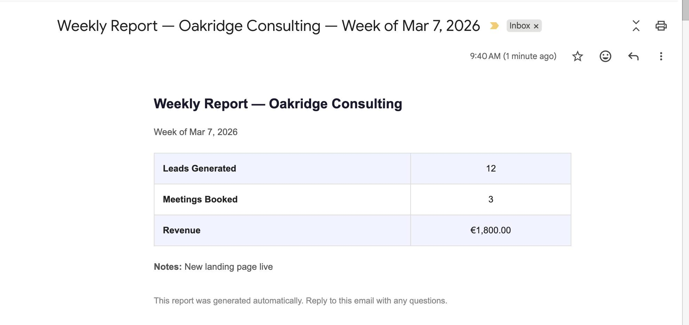
Received email — formatted weekly report with leads, meetings, revenue, and notes - Activate the schedule. Once testing confirms everything works, toggle the scheduling switch at the bottom of the canvas. The scenario will now run automatically every Monday at 8:00 AM without any manual intervention.
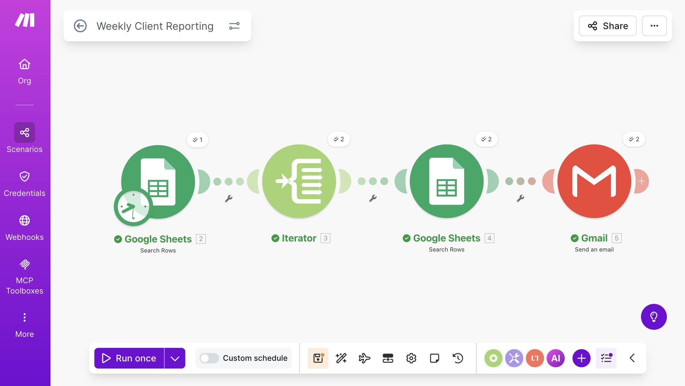
Complete scenario — four modules connected with green checkmarks after successful execution Get one tested automation tutorial per week — no fluff, no spam. Subscribe free →
The HTML Email Template
The Gmail module needs HTML code to format the email as a professional report instead of plain text. HTML (HyperText Markup Language) is the formatting language behind emails and web pages — but you don't need to learn it. You have two options for getting the template into Make.com.
The quickest approach: ask any AI chatbot (ChatGPT, Claude, Gemini) to generate an HTML email template for you. Tell it something like: "Generate a simple HTML email template for a weekly client report. Include a heading with the client name, a subheading with the week date, a table with three rows: Leads Generated, Meetings Booked, and Revenue, and a small footer note saying the report was generated automatically." The chatbot will give you clean HTML code that you can paste directly into the Gmail module's Content field. This approach also makes it easy to customize — just describe what you want changed and the chatbot updates the code for you.
If you prefer a ready-made template, copy the code block below and paste it into the Content field after setting Body type to "Raw HTML" in the Gmail module:
<div style="font-family: Arial, sans-serif; max-width: 600px; margin: 0 auto;">
<h2 style="color: #1a1a2e;">Weekly Report — [Client Name]</h2>
<p style="color: #555;">Week of [Week Date]</p>
<table style="width: 100%; border-collapse: collapse; margin: 20px 0;">
<tr style="background: #f0f4ff;">
<td style="padding: 12px; border: 1px solid #ddd; font-weight: bold;">Leads Generated</td>
<td style="padding: 12px; border: 1px solid #ddd; text-align: center;">[Leads Generated]</td>
</tr>
<tr>
<td style="padding: 12px; border: 1px solid #ddd; font-weight: bold;">Meetings Booked</td>
<td style="padding: 12px; border: 1px solid #ddd; text-align: center;">[Meetings Booked]</td>
</tr>
<tr style="background: #f0f4ff;">
<td style="padding: 12px; border: 1px solid #ddd; font-weight: bold;">Revenue</td>
<td style="padding: 12px; border: 1px solid #ddd; text-align: center;">[Revenue]</td>
</tr>
</table>
<p style="color: #888; font-size: 12px; margin-top: 30px;">This report was generated automatically. Reply to this email with any questions.</p>
</div>After pasting, click each bracketed placeholder and replace it with the corresponding Make.com mapping token: [Client Name] becomes the Client Name (A) field from module 2, [Week Date] becomes the formatDate formula, and each metric becomes the matching column from module 4 (the Weekly Metrics Search Rows).
Credits Cost and Free Plan Math
This weekly report automation is lightweight. Here's the exact cost breakdown per run:
Credits per Run
| Module | Credits | Notes |
|---|---|---|
| Search Rows (Client List) | 1 | One search regardless of client count |
| Iterator × N | N | One iteration per active client |
| Search Rows (Metrics) × N | N | One search per active client |
| Gmail Send × N | N | One email per active client |
| Total per run | 1 + 3N | N = number of active clients |
The schedule trigger is a timer — it starts the scenario but doesn't consume a credit. All processing credits come from the modules that handle data.
For a typical small agency with 5 active clients: 1 + 3(5) = 16 credits per week, or about 64 per month. Make.com's free plan includes 1,000 credits per month — so this automation uses about 6% of your free allowance, leaving plenty of room for your other automations.
Even at 20 active clients (61 credits per week, ~244 per month), you're well within free plan limits. The scenario only becomes a concern at 100+ clients — at which point you're running a large agency and the $9/month Core plan is a rounding error.
What Could Go Wrong (and How to Handle It)
The most common issue is the date filter returning no results. This happens when the Week column format in your spreadsheet doesn't exactly match the formula output. If your sheet stores dates as "3/9/2026" but the formula outputs "2026-03-09," the text comparison fails silently — no error, just no email sent. Fix: standardize your Week column to YYYY-MM-DD format and always enter dates consistently.
The second issue is the scenario running on a non-Monday day during testing. The addDays(now; -7) formula assumes Monday execution. If you manually trigger the scenario on Wednesday, it calculates the wrong week. For testing, temporarily hardcode the date — replace the formula with the actual date string that matches your test data.
Third: if a client exists in the Client List but has no metrics row for the current week, the second Search Rows returns zero results. Depending on your setup, Gmail may still fire with incomplete data — the client could receive a report with missing numbers. To prevent this, add a filter between the second Google Sheets module and the Gmail module: set the condition to "Total number of bundles" greater than 0. This way, if no metrics exist for a client that week, the email is skipped entirely instead of arriving empty.
Frequently Asked Questions
Can I send reports on a different day or at a different time?
Yes. Open the Schedule settings and change the day and time to whatever you prefer. Some agencies send Friday afternoon summaries instead of Monday morning reports. You can also set it to run daily or bi-weekly — just adjust the Week filter in the metrics search accordingly.
Can I add more metrics columns to the report?
Yes. Add new columns to your Weekly Metrics sheet (e.g., Ad Spend, Conversion Rate, New Customers), then update the HTML email template to include additional table rows. Map each new row to the corresponding column from the second Google Sheets module.
What if I want to include a comparison to the previous week?
You'd need a second metrics search filtered to the week before (addDays(now; -14) instead of -7), then calculate the difference in the email body using Make.com formulas. This adds complexity — consider it as a version 2 upgrade once the basic report is working reliably.
Does this work with Google Workspace (business Gmail) accounts?
Yes. The Gmail module works with both free Gmail and Google Workspace accounts. You'll authorize access during module setup — the process is identical for both account types.
Can I use Outlook or another email provider instead of Gmail?
Yes. Replace the Gmail module with the generic "Email" module (SMTP) or the Microsoft 365 Email module. The HTML template and mapping logic stay exactly the same — only the email sending module changes.
What happens if I add a new client to the Client List mid-week?
The new client will be included in the next Monday's run automatically, as long as their Status is "Active" and they have a corresponding row in the Weekly Metrics sheet for that week. No scenario changes needed.